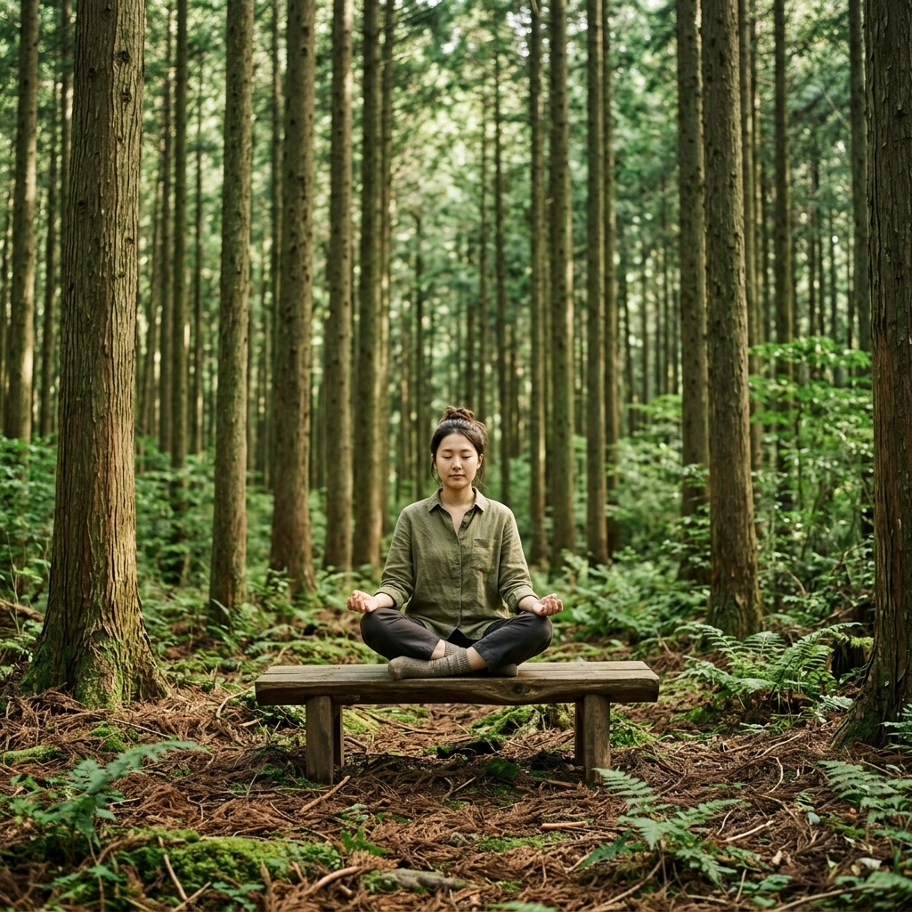
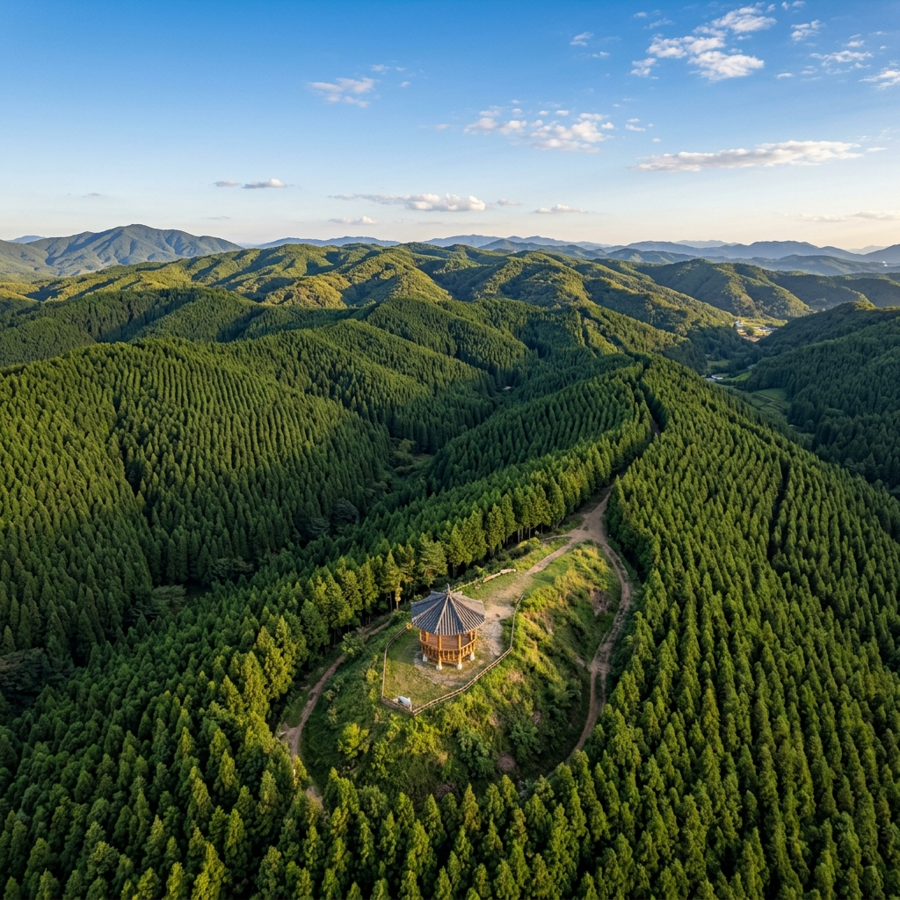

편백나무는 여름 초입, 기온과 습도가 동시에 높아지는 시기에 피톤치드를 가장 많이 분비합니다.
6월 축령산 편백숲에 들어서면 그 차이를 바로 몸으로 느낄 수 있습니다. 숲 밖보다 기온이 3~4도가량 낮고, 진하고 청량한 편백 향이 코를 채워 심신이 절로 이완됩니다.
또한 7~8월 여름 성수기와 달리 6월은 방문객 수가 적어 숲이 훨씬 조용합니다. 사람들과 섞이지 않고 편백나무 사이를 오롯이 혼자 걷는 시간을 원한다면 6월 평일 방문이 최적입니다.
신엽(새잎)의 연두색과 기존 짙은 초록 잎의 대비가 이루는 색감도 사진 촬영을 좋아하는 분들에게 이 시기 방문을 권하는 이유입니다.
축령산 편백숲은 자연이 만든 것이 아닙니다.
임종국(1915~1987) 선생이 1956년, 황폐해진 장성 서삼면 축령산에 처음 편백 묘목을 심기 시작했습니다. 개인 재산을 모두 쏟아부어 30년 넘는 세월 동안 700만 그루 이상을 혼자 심고 가꾼 결과가 오늘날의 이 숲입니다.
선생이 세상을 떠난 뒤 산림청이 관리를 이어받아, 지금은 국립산림치유원이 운영하는 치유의 숲으로 지정되었습니다. 숲 입구에 있는 선생의 기념관과 동상 앞에 서면, 한 사람의 의지가 얼마나 위대한 유산을 남길 수 있는지를 실감합니다.
축령산 편백숲에는 세 가지 난이도의 코스가 있습니다.
힐링 숲길(약 2km, 1시간)은 서삼면 모암 입구에서 편백 핵심 구간을 왕복하는 완만한 흙길입니다. 운동화로도 충분히 걸을 수 있어 처음 방문하거나 가족과 함께할 때 적합합니다.
치유의 숲 순환로(약 5km, 2~2.5시간)는 편백림을 크게 한 바퀴 도는 코스로 피톤치드 농도가 가장 높은 핵심 치유 구간을 지납니다. 완만한 경사와 약간 험한 구간이 혼재합니다.
정상 코스(약 8km)는 해발 621m 정상까지 오르는 등산 코스로 체력과 장비가 필요합니다. 정상에서 장성 시내와 호남 평야를 조망할 수 있습니다.
피톤치드(Phytoncide)는 편백 등 침엽수가 분비하는 천연 항균 물질로, 스트레스 호르몬인 코르티솔 수치를 낮추고 부교감신경을 활성화해 심박수와 혈압을 안정시키는 효과가 여러 연구를 통해 확인되고 있습니다.
편백에서 추출되는 피톤치드는 삼나무·소나무 등 다른 침엽수 대비 테르펜류 성분 함량이 높다고 알려져 있습니다. 임상 연구 결과 편백숲 체류 후 자연살해(NK) 세포 활성이 유의미하게 증가했다는 보고도 있습니다.
단기 방문으로도 스트레스 해소와 기분 전환에 분명한 효과가 있습니다. 업무 스트레스로 지친 분들에게 2시간 이상의 편백숲 산책을 꼭 권하고 싶습니다.

주요 진입로는 서삼면 모암마을 쪽과 북일면 쪽 두 곳입니다.
모암마을 주차장은 무료이며 입구 바로 앞에 화장실과 매점이 있어 가장 많이 이용됩니다. 성수기 주말에는 오전 일찍 주차장이 찰 수 있으니 일찍 출발하세요.
치유 프로그램(요가·명상 연계 산림욕)은 국립산림치유원 홈페이지에서 사전 예약해야 참여할 수 있습니다. 숲 내부에는 간이 화장실과 벤치 쉼터가 주요 구간마다 설치되어 있습니다.
축령산 트레킹 후 장성 시내로 이동하면 향토 음식점에서 토종닭 백숙이나 보리밥 정식 한 끼를 먹을 수 있습니다.
장성호 수변길은 편백숲과 함께 하루 코스로 묶기 좋습니다. 호수 주변 11.5km 데크 산책로를 걸으며 잔잔한 호수 풍경을 감상하는 것도 힐링이 됩니다.
장성읍에는 황룡강 생태공원도 있어, 강변을 따라 가벼운 산책을 즐기거나 자전거를 타기에 좋습니다.
서울에서 장성 축령산까지 승용차로 약 3~3.5시간이 소요됩니다.
호남고속도로 백양사 IC에서 장성 방면으로 이동한 뒤, 내비게이션에 '축령산편백숲 주차장' 또는 '장성 서삼면 모암주차장'을 입력하면 됩니다.
대중교통은 광주에서 장성행 버스를 이용한 후 현지 택시를 타거나, KTX 광주송정역 또는 장성역에서 택시로 이동하는 방법이 있습니다. 직통 버스 편수가 많지 않아 렌터카 이용이 더 편리합니다.
6월 축령산 편백숲 방문의 가장 큰 장점은 피톤치드 농도와 방문객 수의 최적 조합입니다.
무성하게 우거진 수관, 진한 편백 향, 그리고 아직 여름 성수기가 아니라 조용한 숲 환경이 모두 갖춰진 시기입니다. 6월 초~중순에는 장마 전이라 날씨도 쾌적한 편입니다.
6월 하순부터는 장마 시즌이 시작됩니다. 비 오는 날의 편백숲도 나름의 매력이 있지만, 미끄러운 흙길에 주의가 필요합니다. 방문 전 일기 예보를 꼭 확인하고 우비를 준비하세요.

축령산 편백숲 트레킹에는 트레킹화 또는 밑창 두꺼운 운동화가 필수입니다.
흙길이 젖어있을 때 미끄러울 수 있어 가벼운 등산화가 가장 좋습니다. 긴 소매 상의와 긴 바지도 벌레와 자외선으로부터 피부를 보호하는 데 도움이 됩니다.
충분한 물(1인당 1L 이상)과 간단한 간식을 챙기세요. 숲 안에는 음식을 살 수 있는 곳이 없습니다. 모기 기피제도 미리 바르고 입장하면 훨씬 쾌적하게 걸을 수 있습니다.